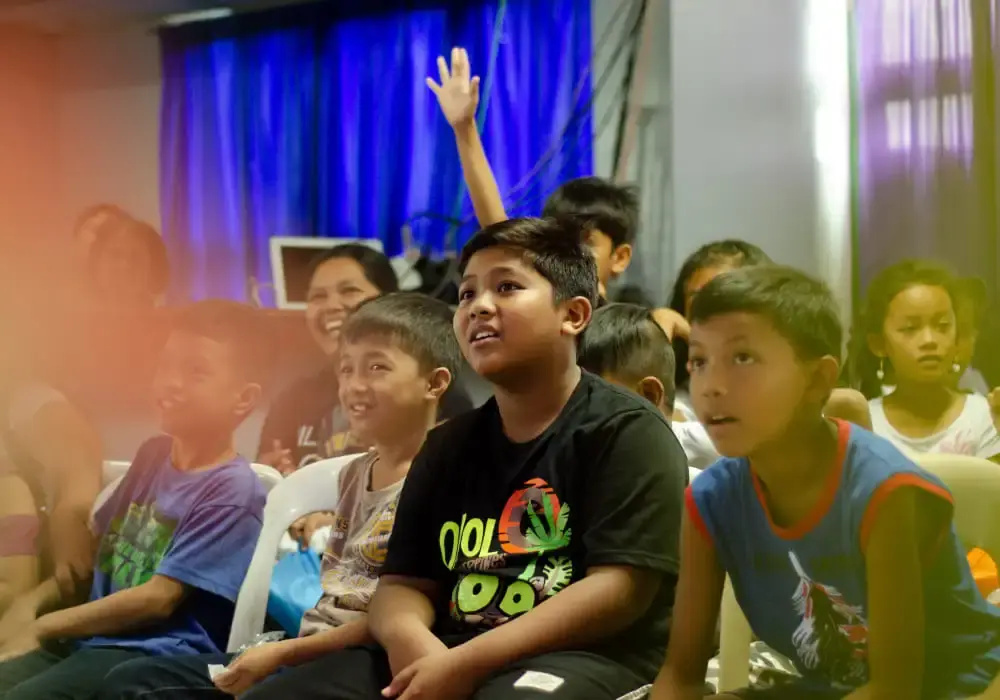
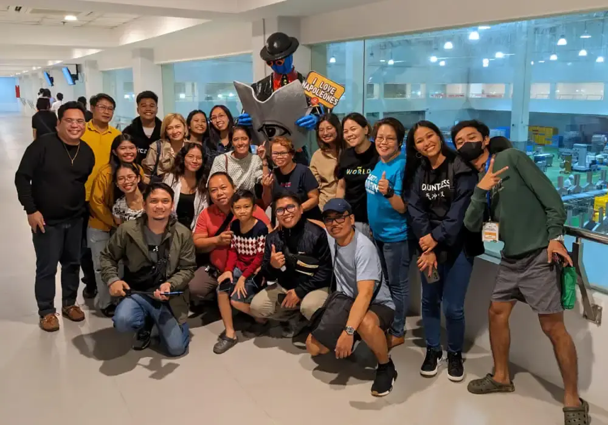
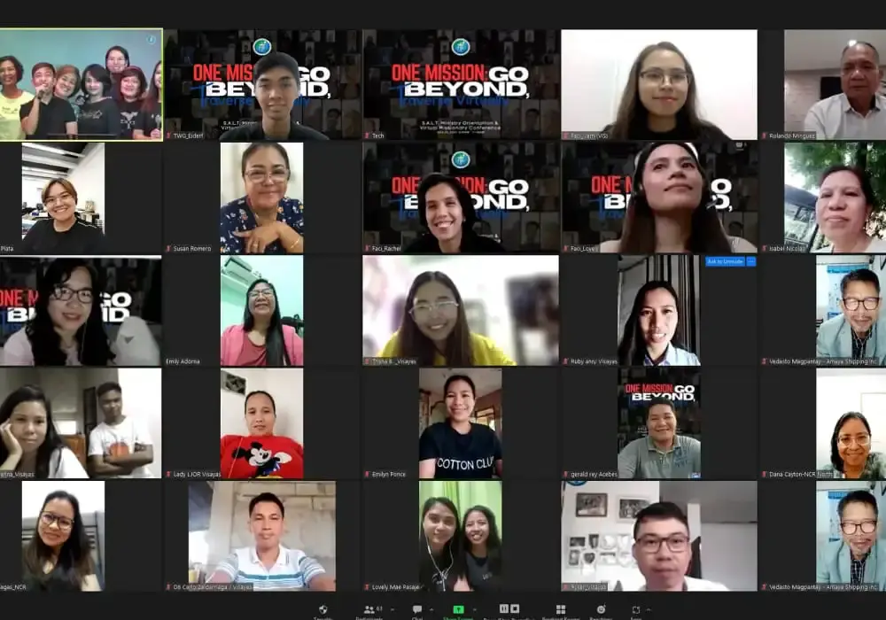

Icon
Discover the seven personal and twelve institutional values that define our community and drive our mission forward.
Icon
Discover the seven personal and twelve institutional values that define our community and drive our mission forward.
Icon
Discover the seven personal and twelve institutional values that define our community and drive our mission forward.
Icon
Discover the seven personal and twelve institutional values that define our community and drive our mission forward.
Icon
Discover the seven personal and twelve institutional values that define our community and drive our mission forward.
Icon
Discover the seven personal and twelve institutional values that define our community and drive our mission forward.
Discover our ministries at LJOR, catering to spiritual growth and community engagement. From education with Gabay-Aral to youth empowerment with YouthRED, leadership with SALT, and virtual missions, find your place to connect and grow.
Gabay Aral
Project Timothy
YouthRED
SALT
Connect Group
Virtual Missionary
Explore LJOR's global network of churches and outreach initiatives, reaching communities in diverse locations worldwide. Join us in our mission to spread faith and serve others, making a positive impact across continents.
philippines
ncr
luzon
visayas
mindanao
The LJOR GROWTH SERIES was developed by the Lord Jesus Our Redeemer Church to aid in personal follow-up and discipleship. The Growth Path from D1 to D4 is designed to allow you to discover where you are on your faith journey and it helps you figure out your next step toward spiritual maturity.
Love God. Love One Another.